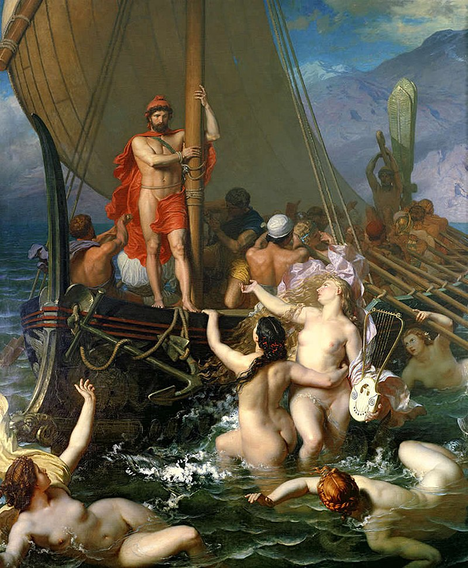
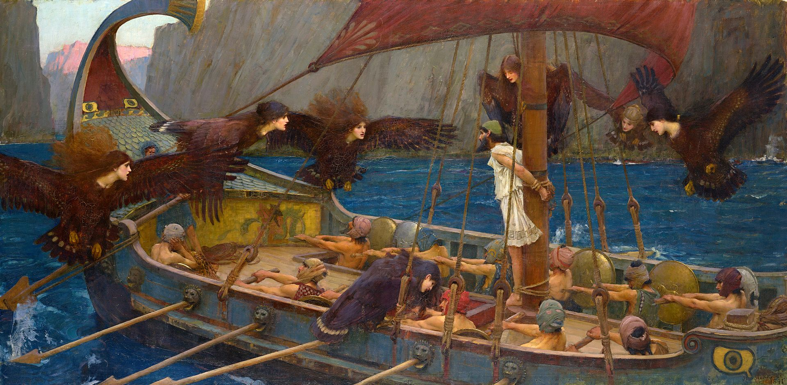

In Greek mythology, sirens (Ancient Greek: singular: Σειρήν, Seirḗn; plural: Σειρῆνες, Seirênes) are humanlike beings with alluring voices; they appear in a scene in the Odyssey in which Odysseus saves his crew's lives. Roman poets place them on some small islands called Sirenum scopuli. In some later, rationalized traditions, the literal geography of the "flowery" island of Anthemoessa, or Anthemusa, is fixed: sometimes on Cape Pelorum and at others in the islands known as the Sirenuse, near Paestum, or in Capreae. All such locations were surrounded by cliffs and rocks. Sirens continued to be used as a symbol for the dangerous temptation embodied by women regularly throughout Christian art of the medieval era.

The earliest source to acknowledge the Sirens—Homer’s Odyssey—gives no description of them. Presumably, Homer would have mentioned if they had an unusual appearance; thus, it is possible that Homer’s Sirens just looked like ordinary human women. Almost all later traditions, however, represented the Sirens as half-human and half-bird, similar to the Harpies. The Sirens had the head (and often torso) of a beautiful woman, but the wings and lower body of a bird. A much later source, produced around the seventh or eighth century CE, described the Sirens as having the upper bodies of human women but the lower bodies of fish.[35] This is the origin of the mermaid Sirens that are sometimes found in more contemporary art and pop culture. But the Sirens’ most important attribute was, of course, their enchanting voices, which they used to lure sailors to their deaths: Whoso in ignorance draws near to them and hears the Sirens' voice, he nevermore returns, that his wife and little children may stand at his side rejoicing, but the Sirens beguile him with their clear-toned song, as they sit in a meadow, and about them is a great heap of bones of mouldering men, and round the bones the skin is shrivelling. One late source, the mythographer Apollodorus, noted that only one of the Sirens sang, while the other two provided instrumental accompaniment: one played the lyre, while the other played the flute. The Sirens also had the power to calm the winds. The Sirens can be found in ancient art from as early as the seventh century BCE. They were generally depicted as part-bird and part-woman, though they were sometimes shown as male or even bearded. Originally, the Sirens were most commonly represented as birds with human heads. But by the middle of the sixth century BCE, they were almost always shown with the head, torso, and arms of beautiful women and the wings and lower bodies of birds. In their newly-grown arms, they sometimes held instruments, fans, or pomegranates. The iconography of the Sirens suggests that these creatures were somehow associated with death and the Underworld. This view is reinforced by the fact that they often showed up on funerary monuments and sarcophagi. Other times they could be seen in the company of Underworld gods such as Persephone or Hades.
The Sirens were known in ancient Greece from as early as the Mycenaean period (ca. 1600–1050 BCE). However, little else is known about their origins. It is likely that they were first popularized by the outlandish tales told by sailors.
